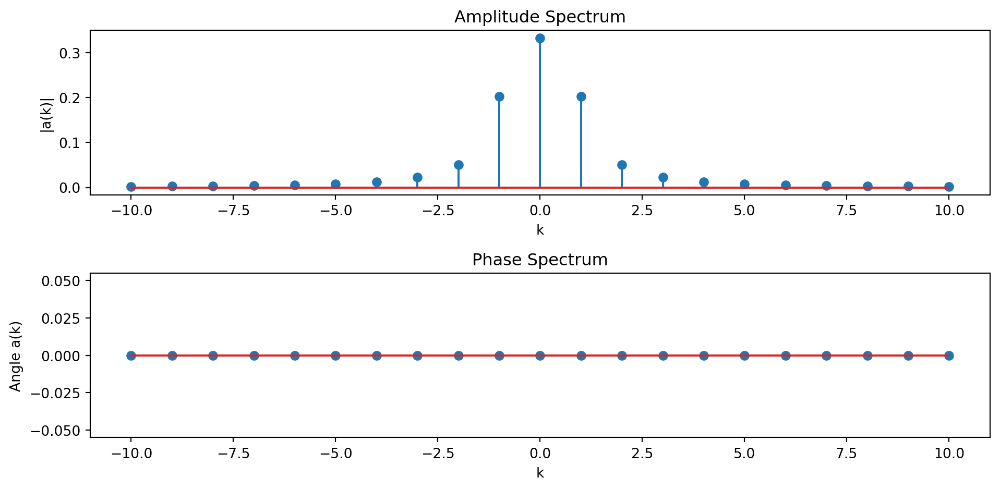
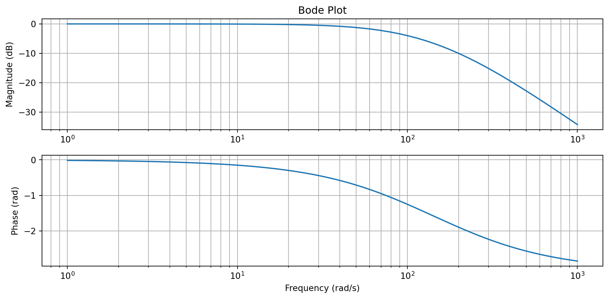
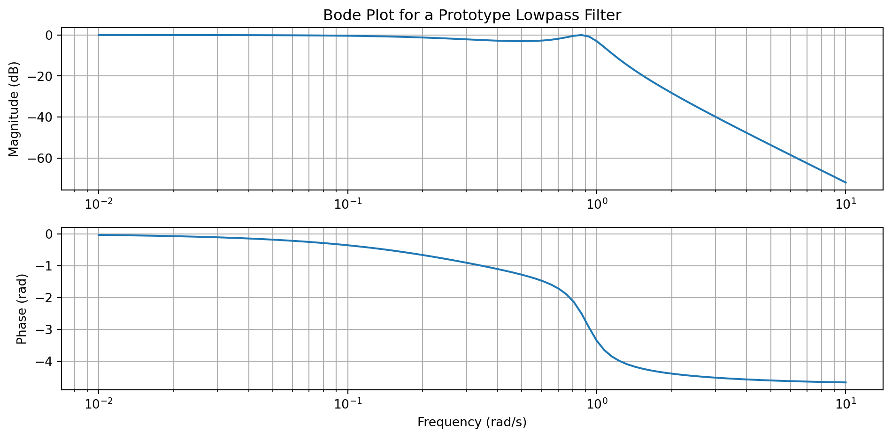

ECE 4624: Meeting 3
CT Fourier Transform
2025-08-22
In the last lecture we defined a CT signal and saw how to build up models of such signals from mathematical primitives. Today we review how to do the opposite, decompose a given signal into primitives, namely complex exponentials (sinusoids). We also review how CT LTI systems affect signals via the frequency response and define a frequency selective filter we will use in the next lecture, the low-pass filter. Note: today’s lecture is a review of material from ECE 2714.
READINGS:
- PM 4.1.1 and 4.2
- Chapter 14 ECE 2714 Supplementary Notes
- Chapter 16 ECE 2714 Supplementary Notes
- Chapter 18 ECE 2714 Supplementary Notes
- Chapter 20 ECE 2714 Supplementary Notes
Fourier Series: Synthesis and Analysis Equations
Suppose we can approximate a periodic function \(x(t)\) with period \(T_0\) by the sum \[\boxed{x(t) \approx \sum\limits_{k = -\infty}^{\infty} a_k \, e^{j k\omega_0 t}\;.}\] This is called the synthesis equation of the CT Fourier series.
Note \(k\) is an integer and the fundamental frequency \(\omega_0 = \frac{2\pi}{T_0}\).
The Fourier series coefficients, \(a_k\), are determined by the analysis equation: \[\boxed{a_k = \frac{1}{T_0} \int\limits_{0}^{T_0} x(t)e^{-jk\omega_0 t} \; dt}\] where the integration can be over any interval of length \(T_0\) that is equal to the period.
Fourier Series: Spectrum
The CT Fourier Series coefficients are also called the spectrum of the signal.
In general the \(a_k\) are complex.
The function of \(k\), \(|a_k|\) is called the amplitude spectrum.
The function of \(k\), \(\angle a_k\) is called the phase spectrum.
When plotting the coefficients it is common to plot the amplitude and phase spectrum together.
Example of the Fourier series
Consider the signal \[x_p(t) = \left\{ \begin{array}{lc} t^2 & -1 < t < 1\\ 0 & \mbox{else} \end{array} \right.\] periodically extended with period \(T_0 = 2\) \[x(t) = \sum\limits_{i = -\infty}^{\infty} x_p(t - 2i)\]

Plot of the example signal.
To find the Fourier Series approximation of \(x(t)\), \[x(t) \approx \sum\limits_{k = -\infty}^{\infty} a_k \, e^{j k\omega_0 t}\; ,\] we need to find the coefficients \[a_k = \frac{1}{T_0} \int\limits_{0}^{T_0} x(t)e^{-jk\omega_0 t} \; dt\]
Since the integration can be over any period, we can use the limits \([-1,1]\) and note that \(T_0 = 2\) so that \(\omega_0 = \pi\), \[ a_k = \frac{1}{2} \int\limits_{-1}^{1} t^2\,e^{-jk\pi t} \; dt \]
\[\begin{aligned} a_k &= \frac{1}{2} \int\limits_{-1}^{1} t^2\,e^{-jk\pi t} \; dt\\ &= \frac{1}{2} \left[ \int\limits_{-1}^{1} t^2\,\cos(-k\pi t) \; dt + j \int\limits_{-1}^{1} t^2\,\sin(-k\pi t) \; dt \right]\\ &= \frac{1}{2} \left[ \int\limits_{-1}^{1} t^2\,\cos(k\pi t) \; dt + j \int\limits_{-1}^{1} - t^2\,\underbrace{\sin(k\pi t)}_{\text{always = 0}} \; dt \right]\\ &= \frac{1}{2} \int\limits_{-1}^{1} t^2\,\cos(k\pi t) \; dt\; \mbox{ using an integration table }\\ &= \frac{1}{2} \frac{4k\pi\overbrace{\cos(k\pi)}^{(-1)^k} + 2(k^2\pi^2-2)\overbrace{\sin(k\pi)}^{\text{always = 0}}}{k^3\pi^3}\\ a_k &= \frac{2}{k^2\pi^2}\left(-1\right)^k \end{aligned}\]
\[ a_k = \frac{2}{k^2\pi^2}\left(-1\right)^k \]
This result is undefined for when \(k=0\). In that case note the original integral is \[a_0 = \frac{1}{2} \int\limits_{-1}^{1} t^2 \; dt = \frac{1}{6}t^3 \Big|_{-1}^{1} = \frac{1}{3}\] Thus the final approximation is \[x(t) \approx \sum\limits_{k = -\infty}^{\infty} \underbrace{\frac{2}{k^2\pi^2}\left(-1\right)^k}_{a_k} \, e^{j k\pi t} \;.\]
The corresponding amplitude and phase spectrum plot:
Convergence of the CT Fourier Series
As mentioned above the Fourier Series is strictly speaking an approximation \[x(t) \approx \sum\limits_{k = -\infty}^{\infty} a_k \, e^{j k\omega_0 t} \mbox{ where } a_k = \frac{1}{T_0} \int\limits_{T_0} x(t)e^{-jk\omega_0 t} \; dt\] to determine when this approximation is an equivalence (and in what sense) we need to establish the existence and convergence of the integral and summation respectively.
The CTFS exists if the Dirichlet Conditions hold for the signal:
The signal has a finite number of discontinuities per period.
The signal has a finite number of maxima and minima per period.
The signal is bounded, i.e. \[\int_{T_0} |x(t)| \;dt < \infty\]
CT Fourier Transform
Consider the aperiodic signal \[x(t) = \begin{cases} p(t) & A < t < B\\ 0 & \text{else} \end{cases}\] and it’s periodic extension with fundamental frequency \(\omega_0 = \frac{2\pi}{T_0}\) \[x_p(t) = \sum\limits_{m = -\infty}^{\infty} x(t-mT_0)\] where \(T_0 > B-A\).
The CT Fourier series coefficients are \[ a_k = \frac{1}{T_0} \int\limits_{-\infty}^{\infty} x(t) e^{-jk\omega_0 t}\; dt \] since \(x(t) = 0\) outside the interval \((A,B)\).
Define the CT Fourier Transform of \(x(t)\) as \[\boxed{X(\omega) = \int\limits_{-\infty}^{\infty} x(t) e^{-j\omega t}\; dt}\] so that \[a_k = \frac{1}{T_0} X(k\omega_0)\] are samples of \(X(\omega)\) spaced at frequencies \(\omega_0\).
By the CT Fourier series synthesis equation \[x(t) = \sum\limits_{k = -\infty}^{\infty} \frac{1}{T_0} X(k\omega_0) e^{jk\omega_0 t}\] Now, let \(T_0 \rightarrow \infty\) so that the periodic copies move toward \(\infty\) and \(x_p(t) \rightarrow x(t)\). At the same time the frequency sample spacing becomes infinitesimal and \[X(k\omega_0) e^{jk\omega_0 t} \rightarrow X(\omega) e^{j\omega t}\; d\omega\] To give the Inverse Fourier Transform \[\boxed{x(t) = \frac{1}{2\pi} \int\limits_{-\infty}^{\infty} X(\omega)e^{j\omega t}\; d\omega}\]
This gives the Fourier Transform Pair: \[\underbrace{X(\omega) = \mathcal{F}\{x(t)\} = \int\limits_{-\infty}^{\infty} x(t) e^{-j\omega t}\; dt}_{\text{Forward Transform / Analysis Equation}} \hspace{3em} \underbrace{x(t) = \mathcal{F}^{-1}\{X(\omega)\} = \frac{1}{2\pi} \int\limits_{-\infty}^{\infty} X(\omega)e^{j\omega t}\; d\omega}_{\text{Inverse Transform / Synthesis Equation}}\]
Note: The difference in notation between \(X(\omega)\) and \(X(j\omega)\) is superficial. They generally are the same function. For example \[X(j\omega) = \frac{1}{1+(j\omega)^2} = \frac{1}{1-\omega^2} = X(\omega)\] are the same function since \(j^2 = -1\).
Fourier Transform Pair
\[\underbrace{X(\omega) = \mathcal{F}\{x(t)\} = \int\limits_{-\infty}^{\infty} x(t) e^{-j\omega t}\; dt}_{\text{Forward Transform / Analysis Equation}} \hspace{3em} \underbrace{x(t) = \mathcal{F}^{-1}\{X(\omega)\} = \frac{1}{2\pi} \int\limits_{-\infty}^{\infty} X(\omega)e^{j\omega t}\; d\omega}_{\text{Inverse Transform / Synthesis Equation}}\]
The forward transform decomposes \(x(t)\) into an infinite number of complex sinusoids.
The inverse transform synthesizes a signal as an infinite sum of the sinusoids.
Note the signal \(x(t)\) and \(X(\omega)\) are the same signal, just represented in different domains, the time-domain and frequency-domain respectively.
Similar to the CT Fourier series, the function \(X(\omega)\) is called the spectrum of the signal \(x(t)\). The magnitude spectrum is the function \(|X(\omega)|\) and the phase spectrum is the function \(\angle X(\omega)\). It is common to plot the spectrum as the combination of the magnitude and phase spectrum.
Example: Fourier Transform of the impulse.
Consider the signal \(x(t) = \delta(t)\). The Fourier transform is \[\begin{aligned} X(\omega) &= \int\limits_{-\infty}^{\infty} x(t) e^{-j\omega t}\; dt\\ &= \int\limits_{-\infty}^{\infty} \delta(t) e^{-j\omega t}\; dt\\ &= e^{-j\omega (0)} \mbox{ by the sifting property}\\ &= 1 \end{aligned}\]Example: Fourier transform of the causal real exponential.
Consider the signal \(x(t) = e^{at}u(t)\) for \(a\in \mathbb{R}\). The Fourier transform is \[\begin{aligned} X(\omega) &= \int\limits_{-\infty}^{\infty} x(t) e^{-j\omega t}\; dt = \int\limits_{0}^{\infty} e^{at} \, e^{-j\omega t}\; dt = \int\limits_{0}^{\infty} e^{(a-j\omega) t}\; dt\\ &= \frac{1}{a-j\omega } e^{(a-j\omega) t} \Big|_{0}^{\infty} = \frac{1}{a-j\omega } \left[ \lim_{T\rightarrow\infty} e^{(a-j\omega) T} - \underbrace{e^{(a-j\omega) (0)}}_{1}\right] \end{aligned}\]This converges if \(a < 0\) and
\[X(\omega) = \frac{-1}{a-j\omega } = \frac{1}{j\omega-a} \mbox{ for } a < 0\;.\]
Existence of the CT Fourier Transform
The example of the real exponential above showed that for the Fourier transform to exist, the Fourier (analysis) integral must exist. Similar to the Fourier series some mild conditions, again called the Dirichlet conditions, are a sufficient prerequisite for the Fourier transform of a signal \(x(t)\) to exist:
\(x(t)\) is absolutely integrable \[x(t) = \int\limits_{-\infty}^{\infty} |x(t)|\; dt < \infty\]
\(x(t)\) has a finite number of minima and maxima over any finite interval
\(x(t)\) has a finite number of finite-valued discontinuities over any finite interval
These conditions are not necessary however, and we can extend the Fourier transform to a broader class of signals, if we allow delta functions in the transform
Properties of CTFT
Linearity: if \(x_1(t) \stackrel{\mathcal{F}}{\longleftrightarrow} X_1(\omega)\) and \(x_2(t) \stackrel{\mathcal{F}}{\longleftrightarrow} X_2(\omega)\) then \[ax_1(t) + bx_2(t) \stackrel{\mathcal{F}}{\longleftrightarrow} aX_1(\omega) + bX_2(\omega)\]
Convolution: if \(x_1(t) \stackrel{\mathcal{F}}{\longleftrightarrow} X_1(\omega)\) and \(x_2(t) \stackrel{\mathcal{F}}{\longleftrightarrow} X_2(\omega)\) then \[x_1(t) * x_2(t) \stackrel{\mathcal{F}}{\longleftrightarrow} X_1(\omega)X_2(\omega)\] Note in particular if one signal is the system input and the other is the impulse response, the output is the product of the Fourier transforms of each, where the Fourier transform of \(h(t)\) is \(H(\omega)\), the Eigenvalue or frequency response.
Differentiation: if \(x(t) \stackrel{\mathcal{F}}{\longleftrightarrow} X(\omega)\) then \[\frac{dx}{dt}(t) \stackrel{\mathcal{F}}{\longleftrightarrow} j\omega X(\omega)\] This allows us to easily determine the Eigenvalues/Frequency Response from a stable differential equation.
Properties of CTFT
Multiplication: if \(x_1(t) \stackrel{\mathcal{F}}{\longleftrightarrow} X_1(\omega)\) and \(x_2(t) \stackrel{\mathcal{F}}{\longleftrightarrow} X_2(\omega)\) then \[x_1(t) \cdot x_2(t) \stackrel{\mathcal{F}}{\longleftrightarrow} \frac{1}{2\pi} X_1(\omega)*X_2(\omega)\] where \(X_1(\omega)*X_2(\omega)\) is convolution in the frequency domain \[X_1(\omega)*X_2(\omega) = \int\limits_{-\infty}^{\infty} X_1(\gamma)\cdot X_2(\omega-\gamma)\;d\gamma\]
Time-Shift: if \(x(t) \stackrel{\mathcal{F}}{\longleftrightarrow} X(\omega)\) then \[x(t-t_0) \stackrel{\mathcal{F}}{\longleftrightarrow} X(\omega)e^{-j\omega t_0}\]
Frequency-Shift: if \(x(t) \stackrel{\mathcal{F}}{\longleftrightarrow} X(\omega)\) then \[e^{j\omega_0 t}x(t) \stackrel{\mathcal{F}}{\longleftrightarrow} X(\omega-\omega_o)\]
Properties of CTFT
Conjugate Symmetry: if \(x(t) \stackrel{\mathcal{F}}{\longleftrightarrow} X(\omega)\) then \[x^*(t) \stackrel{\mathcal{F}}{\longleftrightarrow} X^*(-\omega)\] This implies that if \(x(t)\) is real, then the magnitude spectrum is an even function, and the phase spectrum is an odd function.
Integration: if \(x(t) \stackrel{\mathcal{F}}{\longleftrightarrow} X(\omega)\) then \[\int\limits_{-\infty}^t x(\tau)\; d\tau \stackrel{\mathcal{F}}{\longleftrightarrow} \frac{1}{j\omega} X(\omega) + \pi X(0) \delta(\omega)\]
Time and Frequency Scaling: if \(x(t) \stackrel{\mathcal{F}}{\longleftrightarrow} X(\omega)\) then if \(a\) is a real constant \[x(at) \stackrel{\mathcal{F}}{\longleftrightarrow} \frac{1}{|a|} X\left(\frac{\omega}{a}\right)\]
Properties of CTFT
- Parseval’s Relation: if \(x(t) \stackrel{\mathcal{F}}{\longleftrightarrow} X(\omega)\) then \[\int\limits_{0-\infty}^{\infty} |x(t)|^2\; dt = \frac{1}{2\pi}\int\limits_{0-\infty}^{\infty} |X(\omega)|^2\;d\omega\]
The plot of \(|X(\omega)|^2\) as a function of frequency is called the power spectrum of the signal.
Frequency Response of CT LTI Systems
The input-output relationship for a stable LTI system is \[x(t) = \frac{1}{2\pi}\int\limits_{-\infty}^{\infty} X(j\omega) \, e^{j \omega t}\; d\omega \;\longrightarrow\; y(t) = \frac{1}{2\pi}\int\limits_{-\infty}^{\infty} H(j\omega) X(j\omega) \, e^{j \omega t}\; d\omega\] where \(H(j \omega)\) are the Eigenvalues, called the frequency response.
The frequency response of a CT LTI system can be thought of as arising in several equivalent ways.
- Using the Eigenvalues / Transfer Function
- Using the CTFT of the impulse responsr \(h(t)\)
- Directly from a linear, constant-coefficient differential equation

Schematic depiction of analysis of continuous-time systems using Fourier techniques.
Magnitude-phase representation of the CTFR
Note that any complex valued function can be expressed in polar form using the magnitude and phase. Specifically the input and output can be put into this form \[X(j\omega) = |X(j\omega)|e^{\angle X(j\omega)}\] \[Y(j\omega) = |Y(j\omega)|e^{\angle Y(j\omega)}\]
By the convolution theorem then \[H(j\omega) = \frac{Y(j\omega)}{X(j\omega)} = \frac{|Y(j\omega)|e^{\angle Y(j\omega)}}{|X(j\omega)|e^{\angle X(j\omega)}} = \frac{|Y(j\omega)|}{|X(j\omega)|}e^{\angle Y(j\omega) - \angle X(j\omega)} = |H(j\omega)|e^{\angle H(j\omega)}\] This gives the magnitude and phase representation of the frequency response
\[ |H(j\omega)| = \frac{|Y(j\omega)|}{|X(j\omega)|} \]
and
\[ \angle H(j\omega) = \angle Y(j\omega) - \angle X(j\omega) \]
CTFR acting on sinusoids
The advantage of the magnitude and phase representation of the frequency response, is the ease with which we can find the output due to a sinusoidal input. If we apply a sinusoidal input \(x(t) = A e^{j\omega t}\), the output is a the same sinusoid scaled by the frequency response \(y(t) = H(j\omega) A e^{j\omega t}\).
Now using the magnitude and phase representation \[y(t) = H(j\omega) A e^{j\omega t} = |H(j\omega)|e^{\angle H(j\omega)} A e^{j\omega t} = A |H(j\omega)| e^{j\omega t + \angle H(j\omega)}\] Thus we can interpret the frequency response as telling us how the input sinsusoids are scaled in magnitude and phase shifted as they pass through the system.
By the linearity property this extends to real sinusoidal inputs \[ \cos(\omega t + \theta) \longrightarrow |H(j\omega)|\cos(\omega t + \theta + \angle H(j\omega)) \]
Also by the linearity property this analysis extends to the CT Fourier representation of a signal (an infinite sum of sinusoids): \[x(t) = \frac{1}{2\pi}\int\limits_{-\infty}^{\infty} X(j \omega) \, e^{j \omega t}\; d\omega \;\longrightarrow\; y(t) = \frac{1}{2\pi}\int\limits_{-\infty}^{\infty} H(j \omega) X(j \omega) \, e^{j \omega t}\; d\omega = \frac{1}{2\pi}\int\limits_{-\infty}^{\infty} \left| H(j \omega)\right| X(j \omega) \, e^{j \omega t + \angle H(j \omega)}\; d\omega\]
Thus we arrive at the reason for the name Frequency Response – it specifies the the response of a stable system to any linear combination of sinusoidal inputs, i.e. any signal with a Fourier Transform.
Bode plots
We can visualize the frequency response as a plot of the real and imaginary part, or, of the magnitude and phase. Since the magnitude and phase allow us to directly see the system behavior at a given frequency, those plots are much more useful.
Rather than simply plot the magnitude and phase as a function of \(\omega\), it is common to change the abscissa (horizontal / \(\omega\)-axis) to be on a logarithmic scale and so only plot the positive frequency portion of the spectrum.
Plotting on a log-scale compresses this information horizontally so that we can see how a wide range of frequency content is scaled. When plotting the magnitude spectrum it is also common to make the ordinate (vertical / gain axis) to be in decibels (dB).
Thus the magnitude of the frequency response in dB is \(20 \log_{10} |H(j\omega)|\). When the frequency response is plotted this particular way we get what is called a Bode plot.
Example
Consider a frequency response given by \[H(j\omega) = \frac{20000}{(j\omega)^2 + 300(j\omega) + 20000}\]

Filters in CT
Given a stable LTI system with frequency response \(H(j\omega)\) \[x(t) = \frac{1}{2\pi} \int\limits_{-\infty}^{\infty} X(j\omega) e^{j\omega t}\; d\omega \longrightarrow y(t) = \frac{1}{2\pi} \int\limits_{-\infty}^{\infty} X(j\omega) H(j\omega) e^{j\omega t}\; d\omega\]
Note the output is equivalent to a signal with Fourier Transform \(Y(j\omega) = X(j\omega) H(jk\omega_0)\). That is the Fourier transform at each continuous frequency \(\omega\) is scaled by the frequency response at that frequency.
We can use this behavior to our advantage. In many applications we want to modify the values of \(a_k\) or \(X(j\omega)\) selectively, passing them unmodified, increasing (amplifying) them, or decreasing (attenuating) them. This is accomplished by designing a frequency response. Such systems are called frequency selective filters and come in 4 basic types.
We will be discussing filters in much more detail later. For now we just need to define one of the types, the lowpass filter.
Lowpass CT Filters
Low-pass Filters attenuate high frequencies while passing through lower frequencies. They are often used to reduce the effects of high-frequency noise in a signal and to prepare it for sampling (anti-aliasing filters). They are the most common filter.
Low-pass filters remove frequency content above a threshold, \(\omega_c\), called the cutoff frequency. They have an ideal (although unrealizable) frequency response \[H(j\omega) = \left\{ \begin{array}{lc} 1 & -\omega_c < \omega < \omega_c\\ 0 & \text{else} \end{array} \right.\]
The range of frequencies below \(|\omega_c|\) are called the pass-band. The range of frequencies above \(|\omega_c|\) are called the stop-band.
Practical Lowpass Filters
Ideal CT filters cannot be implemented in practice because they are non-causal and thus physically impossible.
Practical filters are described by a frequency response that is a ratio of two polynomials in \(j\omega\), i.e. \[H(j\omega) = \frac{K \cdot(j\omega - \beta_1)\cdot(j\omega - \beta_2)\cdots (j\omega - \beta_M)}{(j\omega - \alpha_1)\cdot(j\omega - \alpha_2)\cdots (j\omega - \alpha_N)}\] where \(K\) is a constant that controls the gain at DC, and the zero or more complex coefficients \(\beta_k\) and the one or more complex coefficients \(\alpha_k\) are called the zeros and poles of the filter respectively.
Practical filters differ from ideal filters in that they cannot be zero over any finite range of frequencies and cannot transition discontinuously between stop and pass bands. Instead they must vary over the bands and transition smoothly, with a degree of variation and sharpness that is a function of the order of the filter and the exact form of the frequency response polynomials. Thus practical filters are described by additional parameters that define the stop and pass-bands.
Lowpass Filter Specification
The overall gain of the filter is the magnitude of the frequency response at a frequency that depends on the filter type, zero for a low-pass filter.
The pass-band is defined by the frequency at which the magnitude of the frequency response drops below the overall gain, often -3dB = \(\frac{\sqrt{2}}{2}\).
The stop-band is defined similarly, as the frequency at which the magnitude of the frequency response drops further below the overall gain, often -20dB = 0.1 or -40dB = 0.01.
The transition bandwidth is defined as the difference in the stop-band and pass-band frequencies.
The pass-band ripple is defined as the maximum deviation from the overall gain, over the pass-band.
Lowpass Filter Specification
